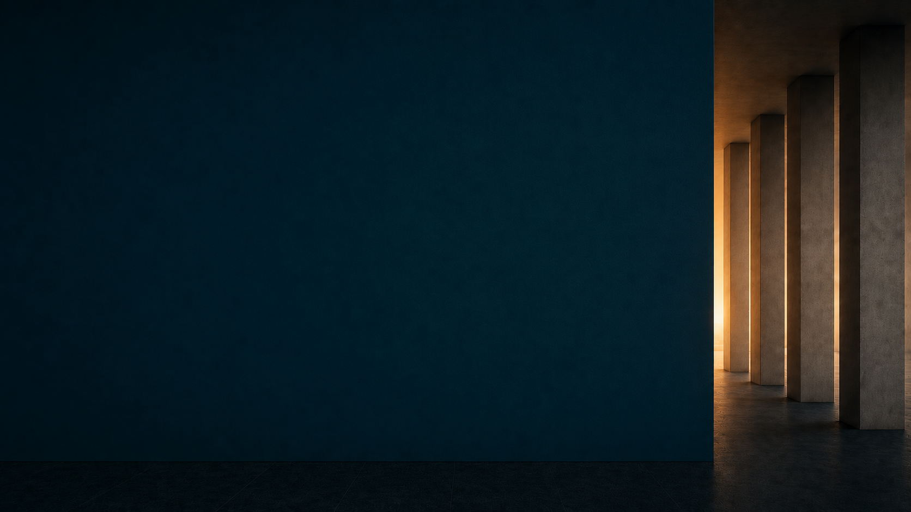

Continuum Plenya
Continuum Plenya
01 / 21
Continuum Plenya
Continuum Plenya
Continuum Plenya

um programa Plenya
«continuum» — aquilo que não se interrompe
100% online · semestral ou anual
Saúde construída no tempo, em conjunto, com método.
«Viva bem, viva mais.»
Continuum Plenya
Continuum Plenya
Continuum Plenya
Continuum Plenya
Alguém precisa acompanhar a trajetória inteira.
Não assume o lugar dos seus médicos. Costura o todo: integra os especialistas, coordena as decisões, traduz exames em contexto e acompanha ao longo do tempo.
Ter bons especialistas é uma coisa. Ter quem integre tudo é outra.

Continuum Plenya
Quatro pilares integrados.
Continuum Plenya
Continuum Plenya
Não é uma nota. É um mapa.
Mais de 800 itens (história, sintomas, exames, hábitos, medicamentos) organizados nos quatro pilares do Método AGIR: uma leitura completa.
Recalculada a cada encontro do Continuum. Um retrato completo do seu estado clínico, numa só leitura.
Exemplo · 22 pilares · escala 0–100
Exemplo ilustrativo.
A curva real é individual.
É daqui que parte cada decisão.
Continuum Plenya
Uma trajetória clínica, não uma sequência de consultas.
Continuum Plenya
Falando a mesma língua, sobre o mesmo painel, sobre a mesma pessoa.
Encontros semanais online, em rotação.
Continuum Plenya
O Continuum nasceu daqui.
Continuum Plenya
Quanto mais cedo a gente alinha expectativa, melhor o cuidado funciona, e o tempo de quem ainda nem chegou.
Um sintoma agudo, uma dúvida específica, um exame para interpretar, isso resolve em uma Consulta Plenya. O Continuum é compromisso de seis ou doze meses.
O Continuum não muda o que você não quiser mudar. Mas também não funciona se a vontade não está. A equipe propõe, devolve dado, ajusta junto. Você executa.
Não somos urgência. O grupo de WhatsApp atende dúvidas em horário comercial, não substitui pronto-socorro nem ambulatório de plantão.
Dizer não com clareza é parte do cuidado.
Continuum Plenya
A ponte entre os encontros.
Após a elaboração do plano, um box personalizado chega até você, com suplementos e medicamentos manipulados, personalizados para o seu tratamento. Depois, os mimos selecionados pela equipe.
À medida que o plano se ajusta, novos boxes seguem o mesmo ritmo, preparados sempre que houver indicação.
O Continuum acontece também entre as videochamadas.
Continuum Plenya
Continuum Plenya
Energia que se mantém, autonomia que dura, capacidade que não se perde no caminho. O melhor momento de cuidar da trajetória é antes de ela inclinar.
Por isso o Continuum é cuidado contínuo, ano após ano,
e não um atendimento avulso.
Continuum Plenya

Comece hoje.